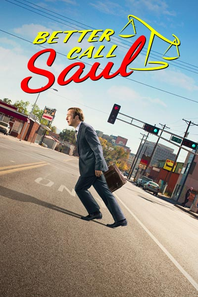

Série derivada do sucesso Breaking Bad, é ambientada seis anos antes de Saul Goodman (Bob Odenkirk) conhecer Walter White (Brian Cranston) e Jesse Pinkman (Aaron Paul). Quando o conhecemos, o homem que se tornará Saul Goodman é conhecido como Jimmy McGill, um advogado de pequenas causas procurando o próprio destino e, mais imediatamente, tentando acertar sua vida financeira. Além da fracassada carreira no direito, ele precisa cuidar do irmão mais bem-sucedido, Chuck (Michael McKean), que embora seja um brilhante advogado, está passando por um grave problema de saúde mental. Trabalhando ora junto a ele e ora contra, também está o faz-tudo Mike Erhmantraut (Jonathan Banks). A série acompanhará a transformação de Jimmy em Saul Goodman, o homem que coloca "criminosos" dentro da "lei". Embora, à principio, apenas cometa pequenos crimes, Jimmy acaba se envolvendo com pessoas muito perigosas do cartel, entre eles Nacho Varga (Michael Mando) e Tuco Salacamanca (Raymund Cruz).
Dirigido por:Vince Gilligan e Peter Gould
Estreia:8 de fevereiro de 2015